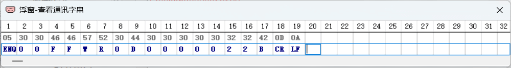
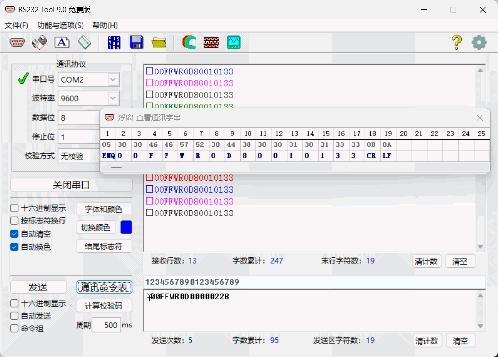
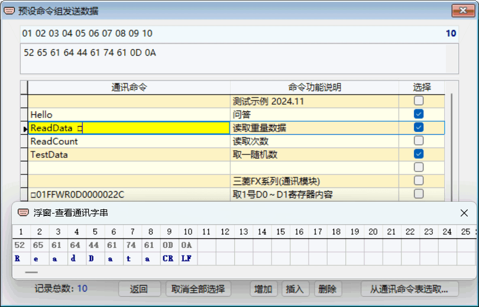

浮窗
RS232 Tool 特色功能之一“浮窗”，是专用于查看通讯数据字串的各字符位置与内容含义。 点击主界面菜单中的“浮窗”或在“设置”模块内勾选“□浮窗-查看通讯字串”，浮窗将被打开并出现在桌面上，浮窗可拖动到桌面任意位置且不会被遮挡。
浮窗窗口见下图所示，窗口表格第一行显示字符位置，第二行显示字符的十六进制数值，第三行显示字符。对于ASCII码数值为0-1Fh的那些不能显示的特殊ASCII码字符（即控制字符），用其缩写代号来表示，如“回车”符——“CR”，其ASCII码数值为0Dh。
浮窗表格宽度可做拉长或缩短来进行调整，以便于查看字符串数据；也可点击表格下边水平滚动条来移动表格内容进行查看。
实例一：单击主界面接收区，其中的通讯命令字串数据就会显示在浮窗上。

实例二：单击下图窗口表格通讯命令栏中的“ReadData”，其字串数据就会显示在浮窗上。
